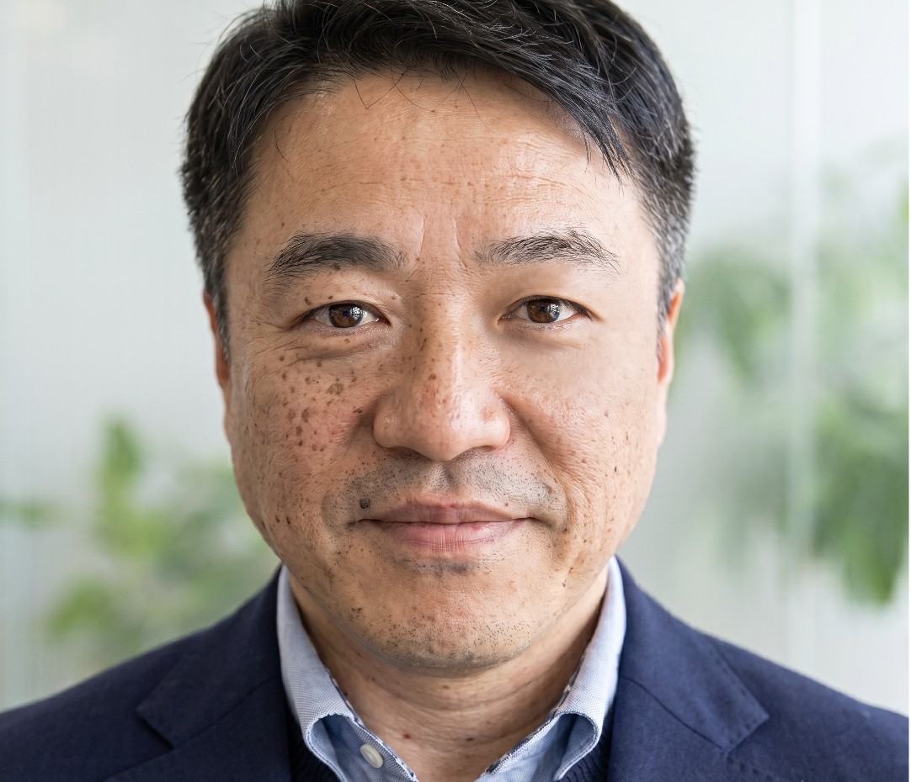

Introduction
2019年以前は民間の英語教育企業で代表取締役・執行役員を務め、 大企業から中小企業まで幅広い組織への ESP コンサルティングを通じて グローバル人材育成に携わってきました。

研究テーマ
ESP / CLIL / Active Learning / WTCIntroduction
2019年以前は民間の英語教育企業で代表取締役・執行役員を務め、 大企業から中小企業まで幅広い組織への ESP コンサルティングを通じて グローバル人材育成に携わってきました。
Current Focus
専門は ESP、アクティブ・ラーニング型カリキュラムの開発と評価。 MUN、OISC、PBL などの実践を通じて、 Meeting-Style Classroom と Willingness to Communicate を探究しています。 またその過程でどのような AI の使用が学習者にとって最適解かを研究しています。
Academic Roles
愛知工業大学 基礎教育センター准教授を軸に、 2025年4月から立命館大学 生命科学部 Project-based English Program の非常勤講師も担当。 2022年10月から2025年3月までは東京外国語大学 GLIP でも教員を務めました。
Research and Career
Scope of Education and Research
大学英語、PBL、ESP、CLIL を組み合わせた授業設計と、 実践的な学修成果につながるカリキュラム開発。
英語教育、Meeting Competency、Operational English Proficiency (OEP: ICTなどツールを活用した英語運用力）、教育での生成AI活用、 国際協働学習
授業設計、教材開発、国際交流実践、 それらの学内実装を通じた教育実践
Recent Projects
共著『AIと大学英語教育：次のステージへ』（金星堂）を刊行。 第4章「JUEMUN2025 botの構築」を執筆し、生成AIを活用した英語運用力（OEP）育成の実践を報告。 あわせて、博士論文をもとにした単著『AI時代のアクティブラーニング型英語教育 ― AIを積極活用した会議型授業の理論・設計・実践 ―』（金星堂、2027年3月刊行予定）を執筆中。
『基礎教育英語カリキュラムの現状と課題』を発表。 あわせて立命館大学で Project-based English Program を担当開始。
Meeting-style classroom approach に関する論文や、 オンライン国際会議に関する共同研究を発表。
Research Updates
書籍を読み込んでいます。
学会発表を読み込んでいます。
その他の活動を読み込んでいます。
Services
以下のサービスを提供しています。
講演、ゲストセッション、FD/SD 向け登壇。
授業改善、生成AI活用、PBL/ESP 設計の実践型ワークショップ。
教材開発、カリキュラム監修、共同プロジェクトの継続支援。
FAQ
大学英語教育、ESP、PBL、模擬国連、国際交流型授業、生成AI活用、 学内ポータルや教材設計などが中心です。
はい。単発の講演から、複数回の研修、授業改善の伴走支援まで対応できます。
学術・教育関係でしたら可能です。
Contact
研究・教育プロジェクト、共同研究、講演、ワークショップ、授業設計支援などの相談に対応できます。